P4: Computer Prototype
Prototype Screenshots
Click to Enlarge:
Tracking Data
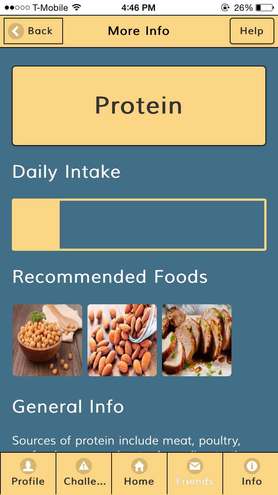
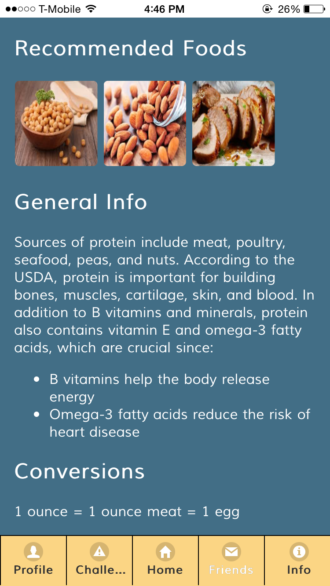
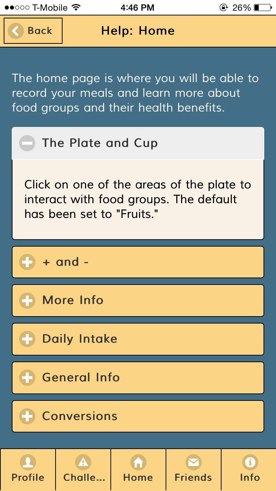
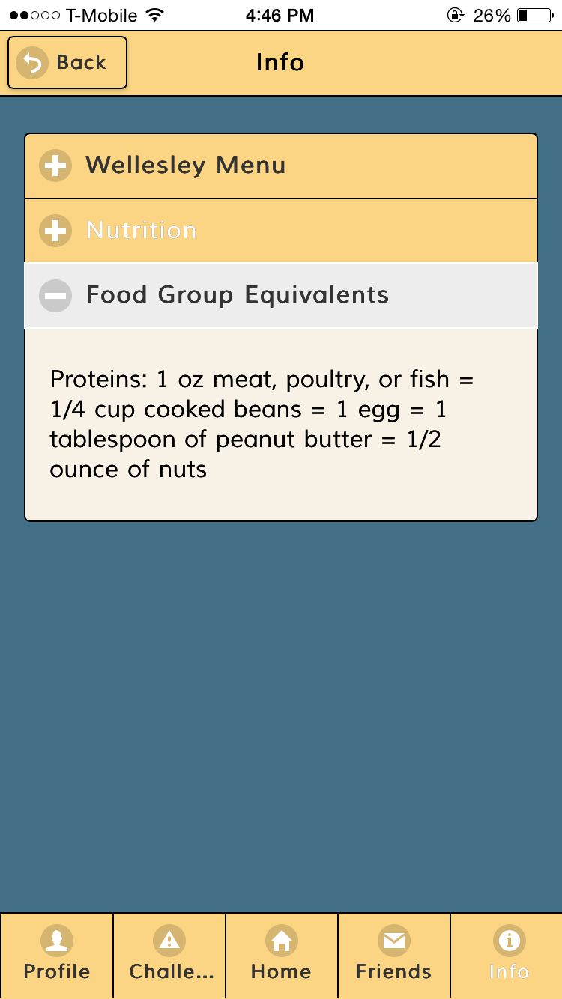
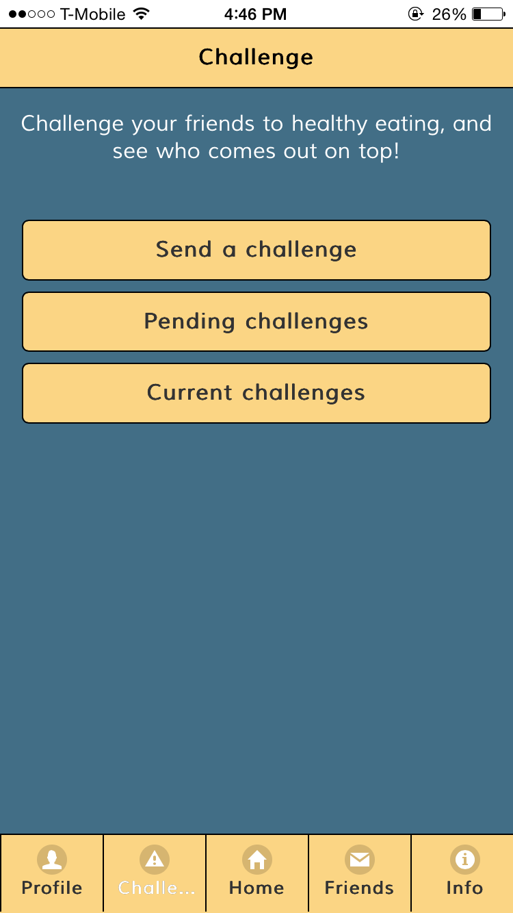
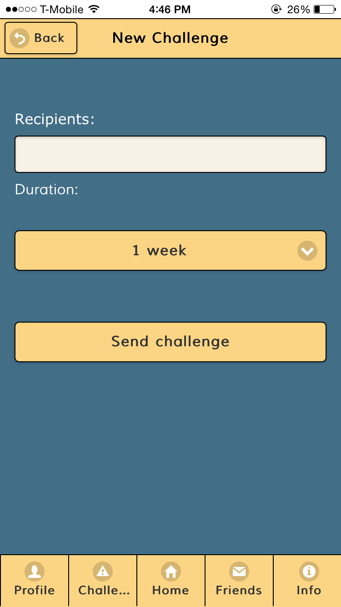
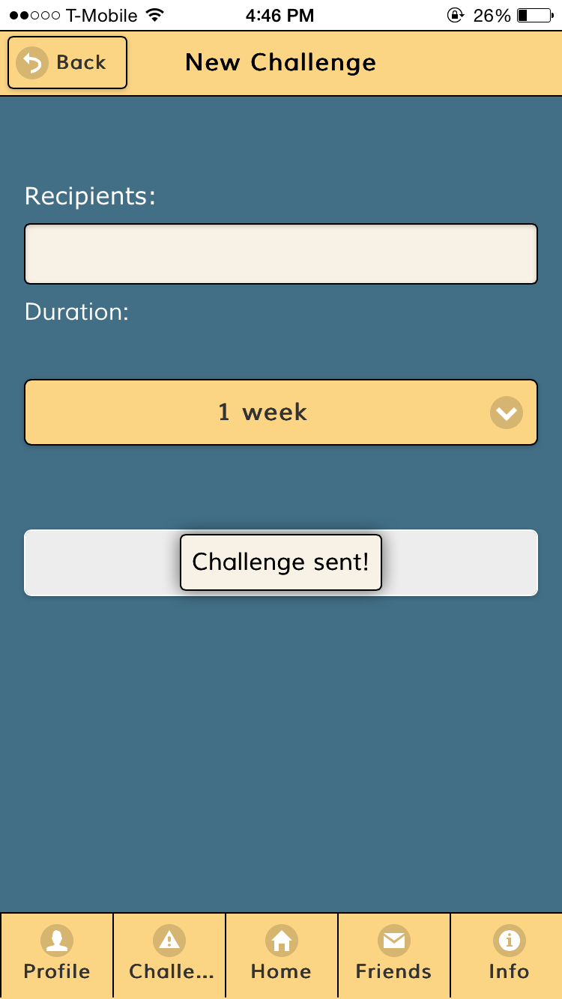
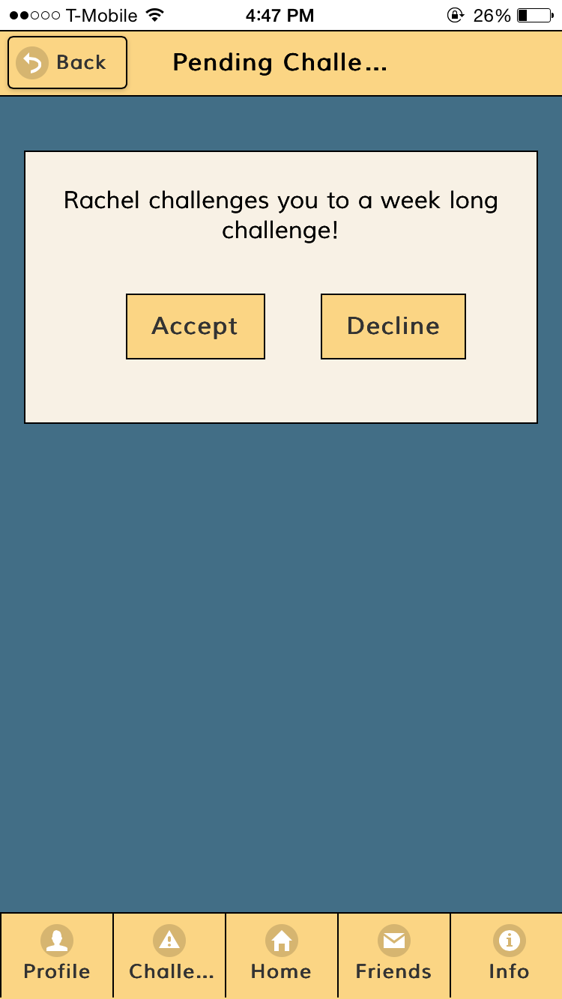
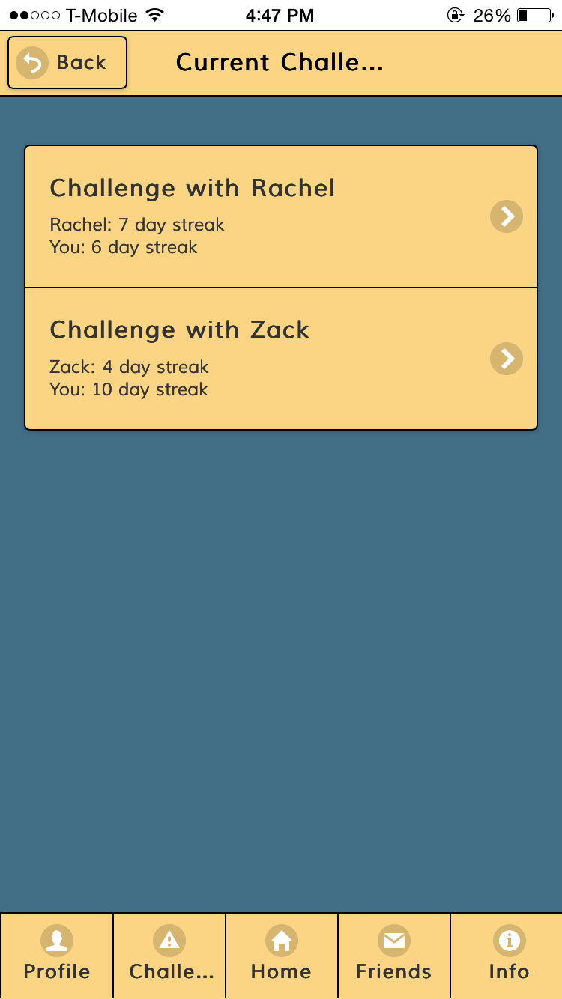
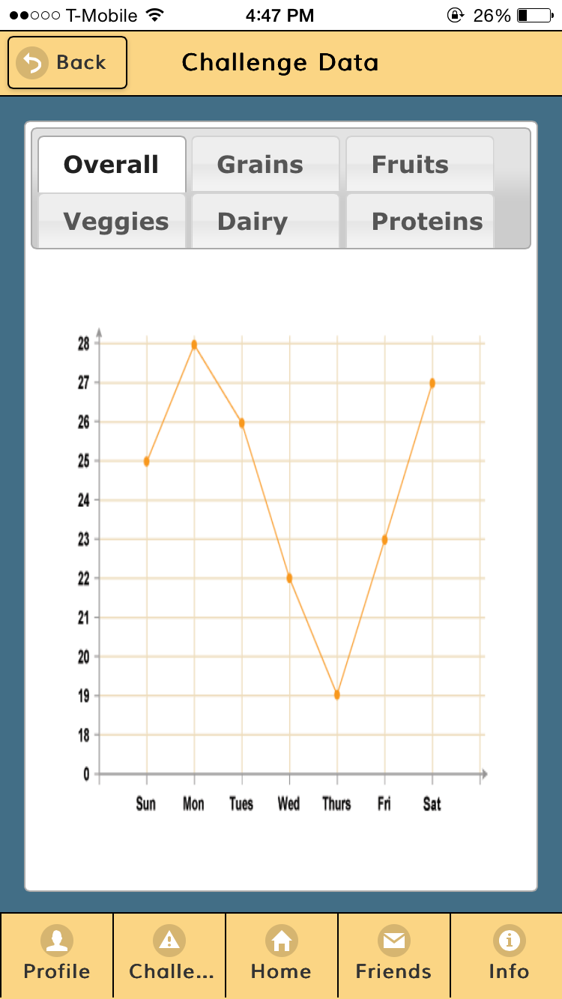
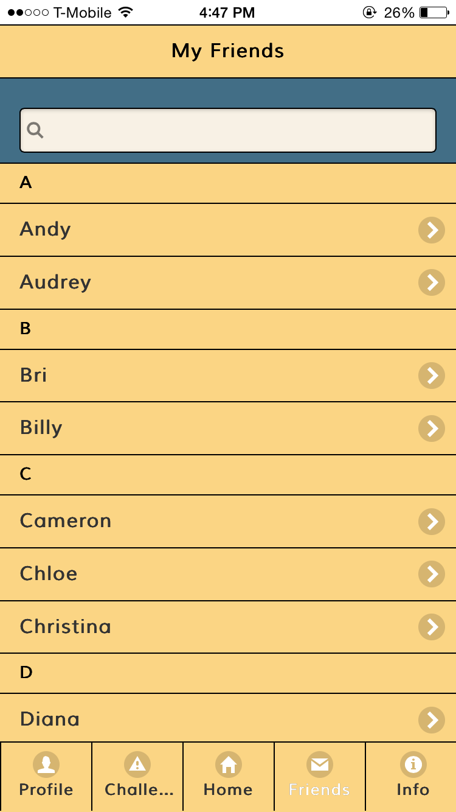
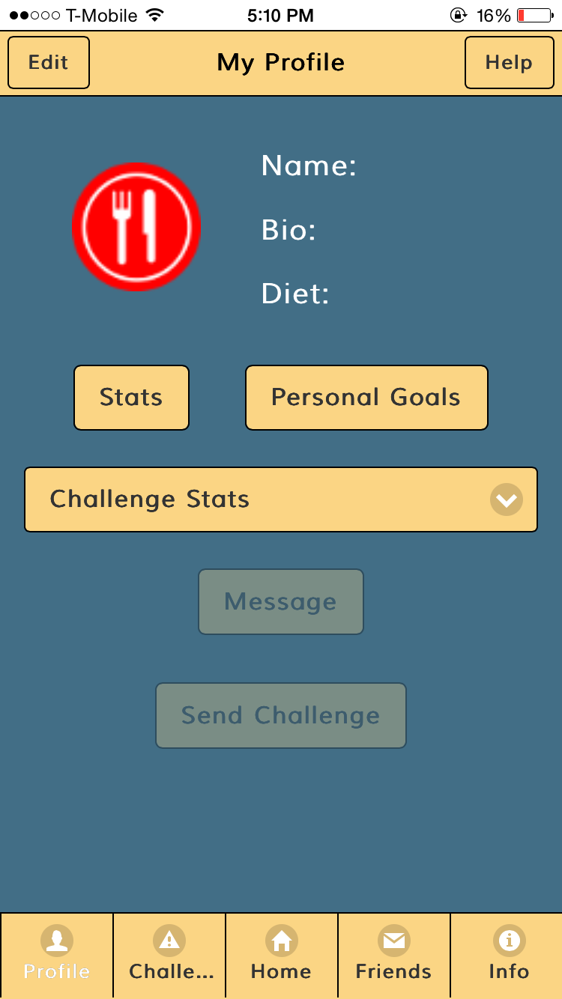
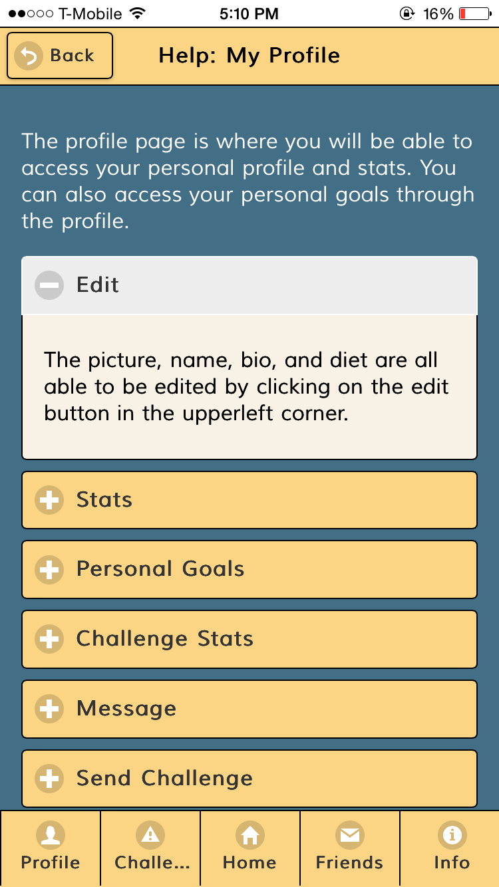
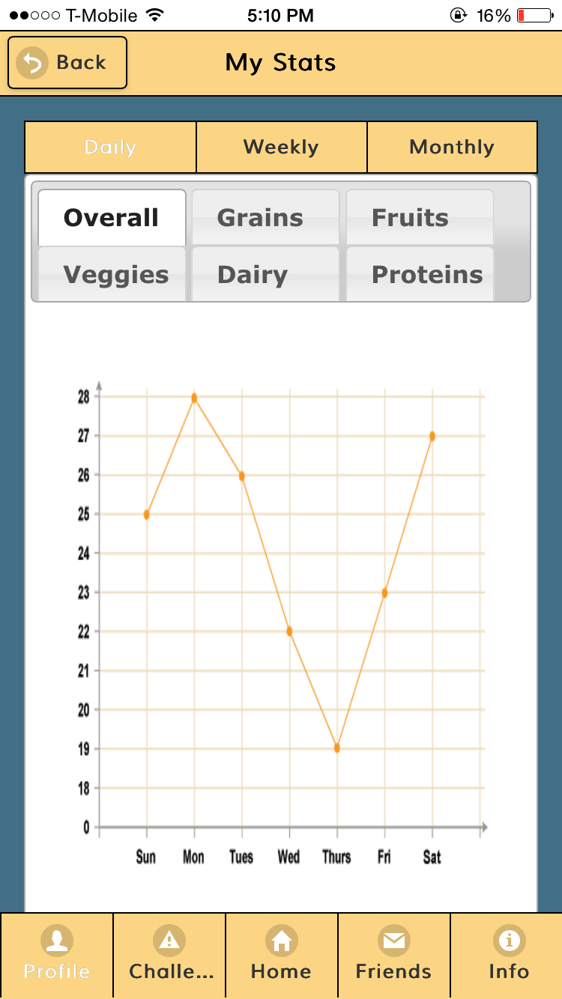
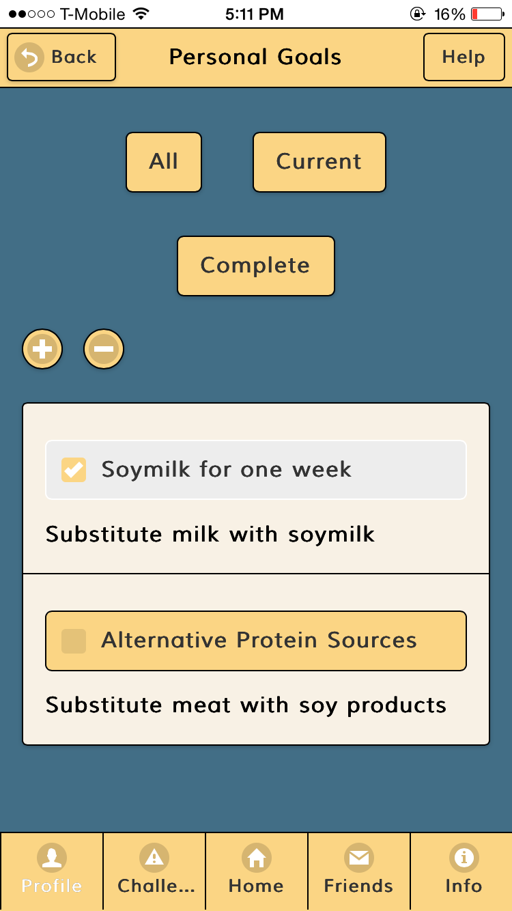
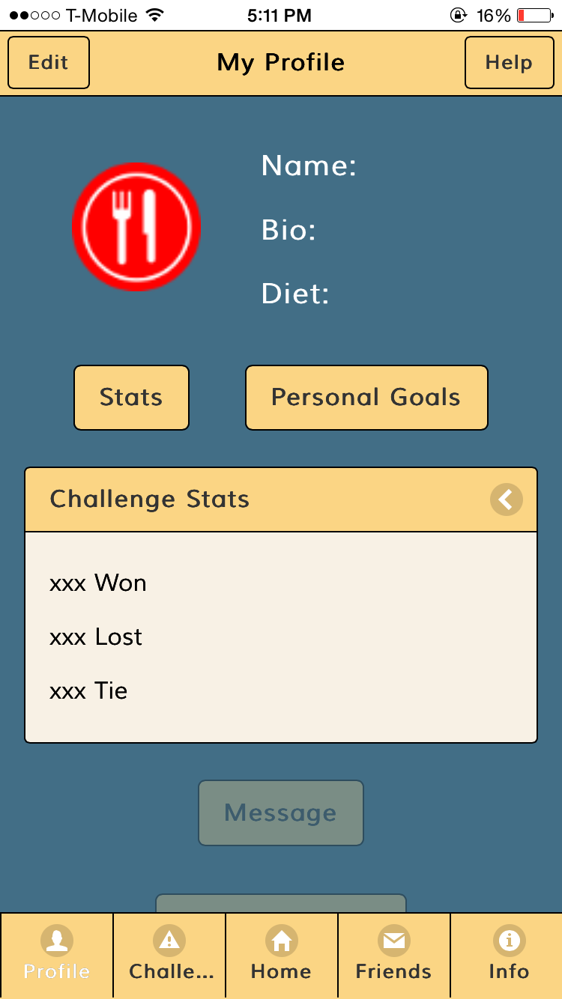
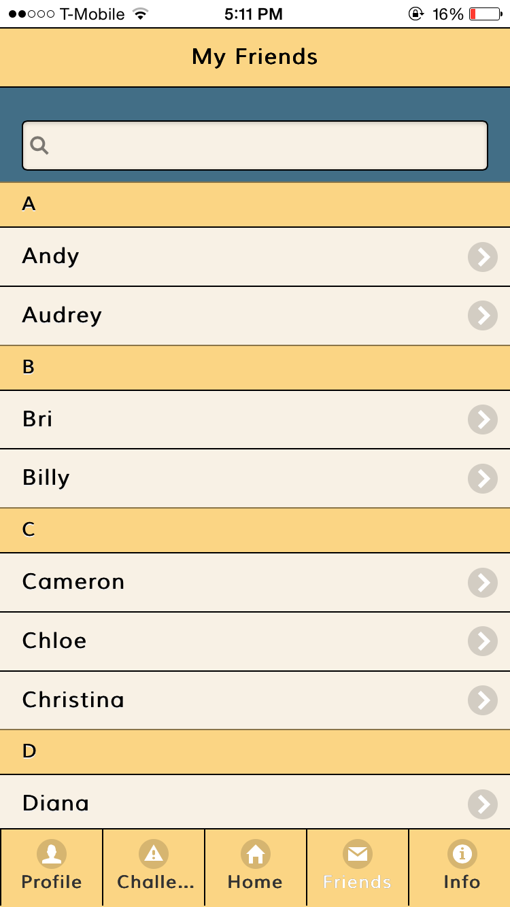
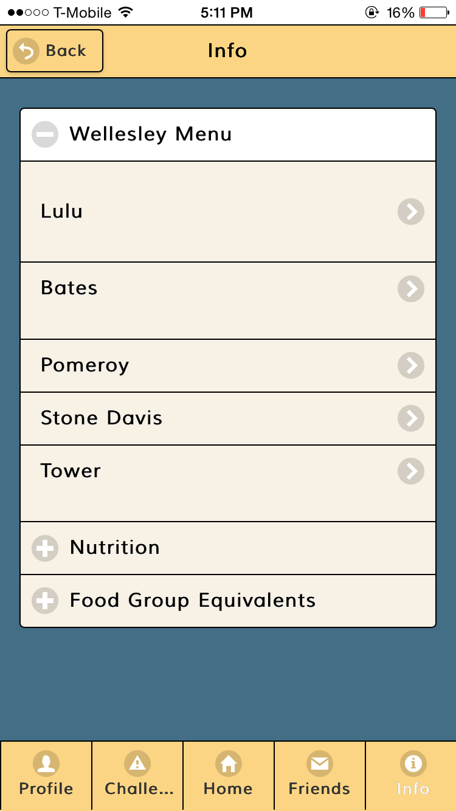
Documentation
Look and Feel
We used jQuery Mobile to maintain a consistent look throughout the application. Since our app is information heavy and aims to educate the user about healthy eating facts, jQuery offers features such as lists and collapsibles to make organizing information easy.
Layout: For the layout of the app, we maintained the design of our original paper prototype. We changed the shape and size of a few buttons, for example the plus and minus buttons and the pending challenge buttons, due to coding constraints. More details of the layout can be found in the documentation below.
Colors: We chose a dark blue, yellow, and off-white color scheme for our app. Yellow is associated with happiness and stimulates appetite, and so we used it as the main header and footer colors. We decided to make the background color the dark blue to make the content of the make easy on the viewer’s eyes. The buttons are the same yellow color as the header, which makes these interactive features contrast and pop out from the dark background.
Complete Features
We decided to focus on the home screen and to fully implement the interactive plate and cup, which allows users to record their meals and to view their daily nutritional intake easily through the simple and summative visual of a portioned plate and to learn more about nutrition via “More Info.”
Help: Again, we decided to replace the help tooltip with a help page. Having organized, structured content would be visually more appealing and less overwhelming.
Home Page: The layout of the page is almost identical to its paper counterpart with few minor differences: instead of having the image, incremental buttons, and more info button on the same row, we decided to group them in different ways for primarily two reasons: 1) the limited width of the iphone and 2) similarity. The width was smaller than we anticipated and placing them on the same row would diminish user visibility. And intuitively, it would make more sense for the objects to be separated by functions; the picture serves as a visual indication of the selected portion of the plate, the + and - buttons are used to record and update meals, and the more info button directs users to a different page. We also altered minor behavioral details. Instead of displaying a tooltip when users tap the help button, they are instead directed to a new page with collapsibles detailing the features of the home screen. Listing information about each section in a tooltip would have been too messy and overwhelming. Additionally, there are no longer any popup messages to give feedback after recording. With a working interactive plate, users will immediately receive visual feedback as selected portions of the plate become more colored.
We also added some measure of error prevention: Users cannot record more than the daily recommended amount nor can they subtract from a food group with 0 recorded servings. When they attempt to do so, they will receive an alert.
More Info: The layout and behavior of the page are identical to what we envisioned. There is a title with the selected food group’s name, help and back buttons, a progress bar indicating daily intake, recommended foods, general information about nutrition and healthy benefits, and conversions. The most interesting part of this page is the progress bar, which allows users to focus solely on one food group and their progress in relation to what is recommended. It is also important to note the lack of numbers on the plate and the progress bar. Any numerical value aside from the increment buttons is implied through color and area. This is to encourage users to explore the app and have a refreshing experience to encourage healthier eating; we do not want users experiencing the tedium and stress of crunching numbers.
My Profile: We deleted achievements because it felt redundant, especially with personal goals.
My Stats: We changed the format of personal stats so that now you can only track your progress via a line graph. Additionally, for the navigation of each type and category of line graph, we put the tags horizontally on the top instead of vertically on the side since it was more aesthetically pleasing to put it on top and it gave the graph more horizontal space to display.
Personal Goals: We changed the navigation format by getting rid of the bar that made the “create” option a permanent and the default page, and instead changed it so that you would be leaded into a list of goals. From there you can toggle the adding a goal option by pressing on the + button in the same way you can toggle the delete a goal by pressing on the - button.
Challenges: We changed the shape of the buttons to make them rectangular and aligned them vertically so the page reads up to down. This was to maintain consistency with the other pages of the app.